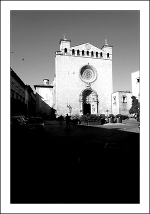

Iglesia de San Francisco
La Iglesia de San Francisco
La iglesia de San Francisco empezó a construirse en el año 1281 y con el tiempo ha sufrido diversas modificaciones como la de la fachada principal que se construyó entre 1618 y 1621, en sustitución a la antigua de estilo gótico, destruida por un rayo.
La iglesia perteneció a los franciscanos siendo desalojados en 1835 y desde entonces se a usado como prisión, caserna militar y Audiencia. Posteriormente fue de nuevo ocupada por los franciscanos en 1906 y en su interior podemos encontrar la tumba del beato Ramón Llull.